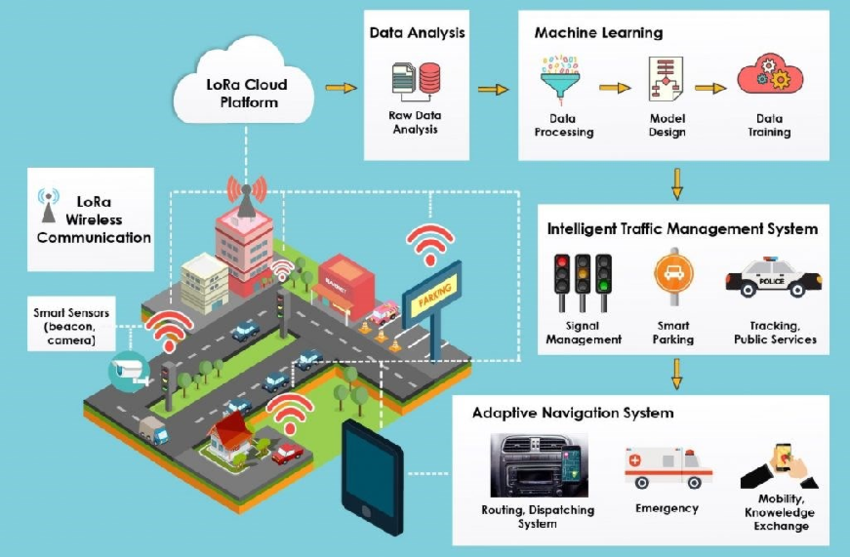

Aspiring Data Scientist · Machine Learning Researcher · UI/UX Enthusiast
Machine learning web app that forecasts crop prices using real-time agricultural market data. real-time agricultural market data.
View Project
AI-based vehicle detection and accident risk prediction system using live CCTV video feeds.
View ProjectAI-based vehicle detection and accident risk prediction system using live CCTV video feeds.
View ProjectOnline platform for medicine shopping with tree-based categorization and health tips.
View ProjectA web-based system for tracking and analyzing poultry market prices (broiler chicken, eggs, poultry feed) across Bangladesh. It offers live dashboards, regional comparisons, historical price charts, price alerts, smart recommendations, and notices from government sites. Built using PHP, MySQL, HTML/CSS, and Chart.js.
View ProjectAbstract:
The agricultural sector is crucial for South Asia's economy, providing employment and driving GDP growth. Accurate price forecasting is essential for food security, market stability, and facilitating import-export activities. In this study, Decision Tree, AdaBoost, and Random Forest have proven effectiveness in predicting crop prices after analyzing different regression models. The Decision Tree has achieved R-squared (R2) values of 0.996, 0.996, and 1 and Mean Squared Error MSE values of 0.242, 4.827, and 0.846 respectively for Rice, Onion, and Oil Seed. Similarly, the AdaBoost has also performed well with R-squared (R2) values of 0.737, 0.959 and 1 and MSE values of 175.234, 14.566 and 1.643 respectively for Tomato, Potato and Oil Seed, indicating better prediction accuracy and lower prediction error. Lastly, Wheat has performed well with Linear Regression with R-squared (R2) values of 0.980 and MSE values of 0.756. Random Forest Regression has shown consistent high R-squared (R2) values and low MSE values. The effectiveness of Decision Tree, AdaBoost, and Random Forest in Bangladesh's agricultural price forecasting highlights their versatility, aiding informed decisions by farmers and policymakers.
Authors: Mahmud, Iftekhar, Das, Puja Rani, Rahman, Md. Habibur, Hasan, Ahmed Rafi, Shahin, Kamrul Islam, & Farid, Dewan Md. (2024).
DOI LinkGenuine Technology & Research Ltd. | Mar 2024 – Jun 2024 | Dhaka, Bangladesh
Univision IT | Jan 2023 – Feb 2024 | Remote
Presented at IEEE TENSYMP 2024 | Co-Author: Dr. Deawn Forid
This research uses regression and ensemble methods to predict crop prices and support sustainable agricultural planning in Bangladesh.
View PaperUnder Review | IEEE Bangladesh Section
We propose a federated model that preserves patient data privacy while maintaining high diagnostic accuracy for distributed hospital networks.
View DraftIndependent Study | Submitted for Journal Publication
This paper combines ARIMA and XGBoost to enhance accuracy in multi-stock forecasting, focusing on the Dhaka Stock Exchange.
View Draft